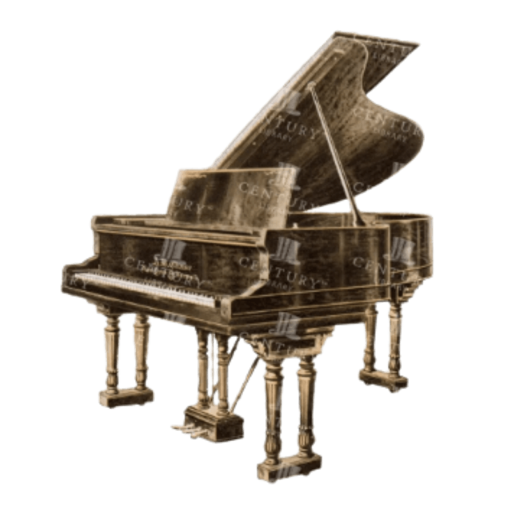
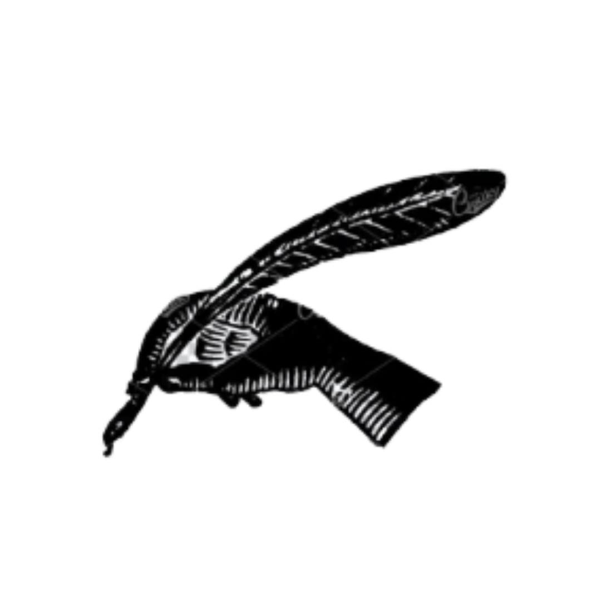
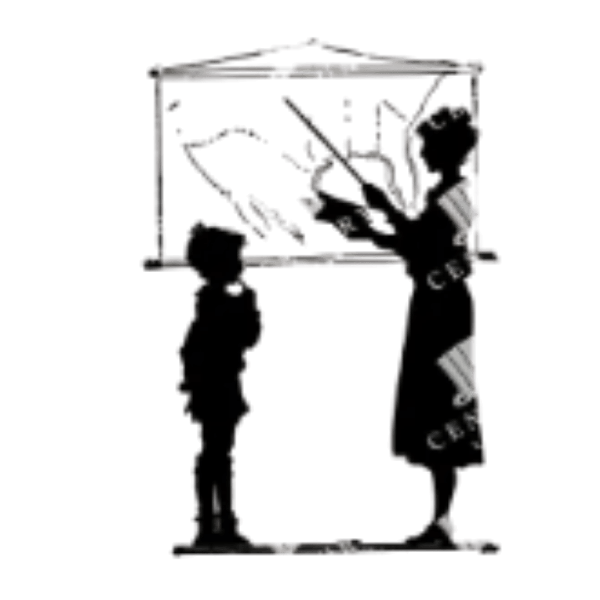
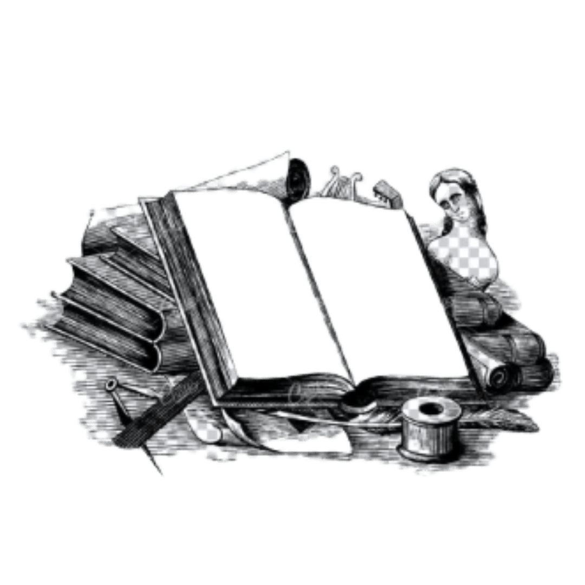

Based in New York

Proudly serving small businesses and creatives in the city and beyond.
Passions and Hobbies

Classical Musician
Storyteller
Educator
Avid Reader(a real human designing real websites)
Every business, artist, and creative professional has a story worth telling. Whether you are launching a business, teaching your craft, or feeding a passion you have poured your heart into, your website should reflect that same care.
Before moving into web development, I trained as an opera singer, which taught me what it means to create something deeply personal and share it with the world. My experience in education and love for all things in classical literature continues to shape my design preferences. I design by listening first, then build with creativity, care, and long-term purpose.

Proudly serving small businesses and creatives in the city and beyond.

Classical Musician
Storyteller
Educator
Avid Reader


Cédille & Co. creates custom websites for small businesses, artists, creative professionals, and service-based organizations. Projects can range from simple portfolio websites to multi-page business sites with blogs, galleries, forms, and search optimization.
I'll review your request and project details from the forms you submit, and email you a proposal that includes prelimiary visuals of your website's homepage with an estimated quote within 1-2 business days. Once you approve the quote, you'll receive an invoice (Net-15 terms) and we can coordinate details on any changes or additions needed.
No. Websites are custom-designed and developed rather than built from pre-made templates. This allows the final site to better reflect your brand, your audience, and the way you actually work.
Yes. If your current website is built on a platform such as Wix, Squarespace, WordPress, Shopify, Webflow, or another website builder, Cédille & Co. can help redesign and migrate the site into a custom-built experience while preserving the content and functionality that still serves your business well.
Yes. Every website includes foundational SEO practices such as thoughtful page structure, optimized titles, metadata, image alt text, responsive design, and performance considerations. More comprehensive SEO services are available for businesses that want additional search optimization.
Yes. Every website is designed responsively so that the experience remains clear, polished, and easy to navigate across desktop, tablet, and mobile devices.
Accessibility is an important consideration throughout the design and development process. Websites are built with WCAG accessibility best practices in mind and run through an audit prior to launch.
Yes, but additional costs depend on the features you need. Blogs, galleries, scheduling forms, and other frequently updated sections can be built with simple management tools where appropriate. Cédille & Co. also offers ongoing website stewardship for clients who would rather have updates handled professionally.
Yes. Brand identity refreshes are available for clients who need help refining their logo, colors, typography, or overall visual direction before beginning a website project. I highly recommend my proprietaty Design Inspiration Tool to discover exactly what you want! Ongoing digital marketing is also available, to increase your online reach and discoverability.
Most projects take approximately one to two weeks, depending on the size of the site, the complexity of the project, and how quickly content and approvals are provided. A more specific timeline is established before development begins.
Cédille & Co. takes a thoughtful, relationship-first approach to design. The goal is not simply to make a website look polished, but to understand the people, work, and purpose behind the business so the finished site feels genuinely representative of the client and the care they have invested in their craft.
Cédille (pronounced say-DEE) comes from the French word for cedilla—the small mark beneath the Ç in my last name, Lançon.
The name is a nod to my husband's French heritage, which has always been an important part of our family. I also speak French, and French language and culture have shaped much of the way we live, travel, and appreciate art, design, and craftsmanship.